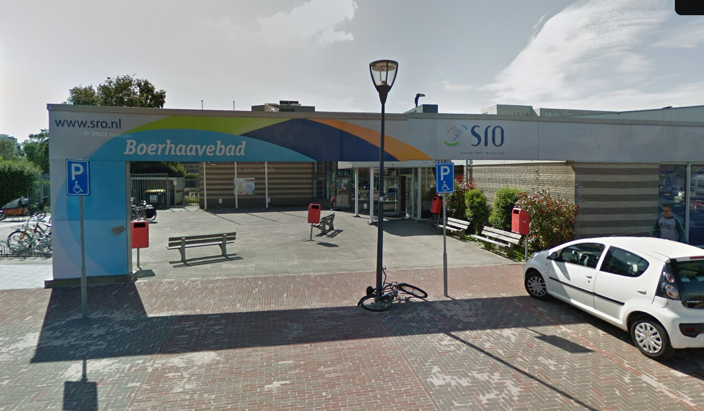

- 
-
Samen spetteren en zwemmen
Met 2 zwembaden is er in het Boerhaavebad genoeg te beleven! Het ideale zwembad om baantjes te trekken of lekker plezier te maken op de glijbaan, in wildwaterkreek en bubbelbaden. Ben je opzoek naar zwemles voor je kind? Dan kun je uiteraard ook bij het Boerhaavebad terecht. Zoek je een sport in het water, dan ben je bij ons aan het juiste adres. Van jong tot oud is er van alles te beleven. Bij het Boerhaavebad kun je 7 dagen in de week terecht.
- Boek nu